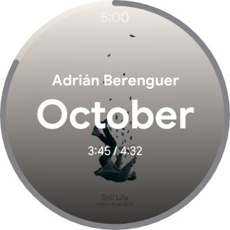
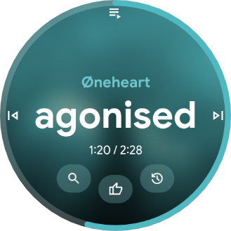
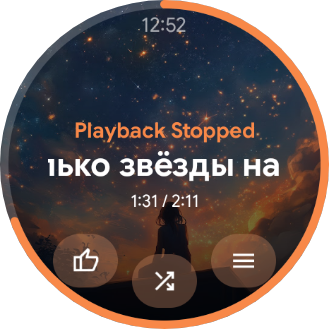
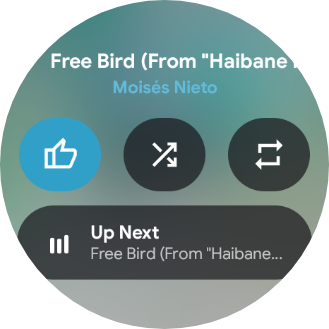
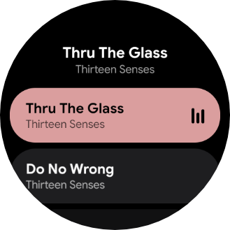
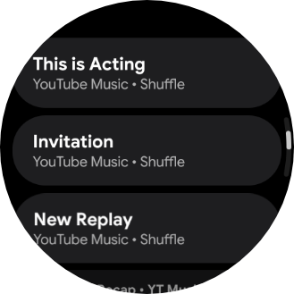
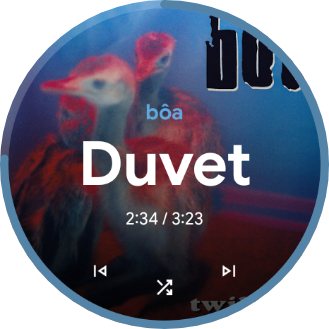
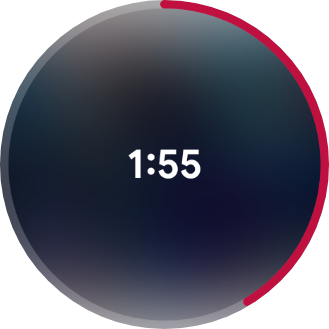
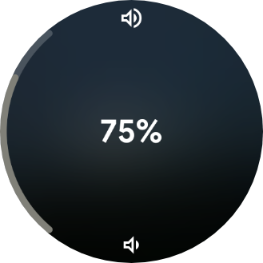

The name
Black Falls
Svartifoss means "Black Falls" in Icelandic — named after the waterfall in Vatnajökull National Park, where dark basalt columns frame a narrow cascade. Like water over stone, music flows through the app.
Control your music from your wrist.
Svartifoss reads whatever's playing on your phone — any app with a media session — and puts full control on your Wear OS watch: physical buttons, screen gestures, the digital crown, a quick-actions panel, a Tile, and a watch-face complication.

Every button, gesture, and screen is yours to assign from the phone app. The watch mirrors it over the local Wearable Data Layer — no cloud, no account, nothing leaves your two devices.


Nothing about Svartifoss is fixed. Pick what each input does, how the screen looks, and what shows up when nothing's bound to a button.
Album art, a drag-to-seek ring, and an optional rotary-crown scrub. Choose the classic edge-ring layout or the new Expressive face with Material 3 Expressive-styled controls.
Physical buttons, screen quadrants, swipe gestures, and up to three on-screen mini buttons — assign play/pause, skip, volume, shuffle, repeat, like, search, playlist shortcuts, Tasker tasks, or launching another app.
Double-tap to open a secondary panel with round buttons for like, shuffle, repeat, and a shortcut straight into the queue.
Browse the app's real playback queue when it exposes one, or fall back to a locally tracked play-history list when it doesn't.
A Tile with track info and transport controls, a queue-preview Tile, and a watch-face complication showing the current album art.
Voice or keyboard search against the playing app's library with a replayable history, plus named playlist shortcuts reachable straight from the watch.
A full-screen list for anything not bound to a button or gesture — nothing is ever more than one extra tap away.
Anything exposing a standard Android media session works out of the box. Extras like like/shuffle/repeat/search depend on what that app publishes.
Screen themes, album-art styles, accent colors, and per-surface styling for the mini-buttons row, quick panel, and queue — all previewed on a live miniature before you commit.







Svartifoss means "Black Falls" in Icelandic — named after the waterfall in Vatnajökull National Park, where dark basalt columns frame a narrow cascade. Like water over stone, music flows through the app.
Svartifoss isn't on the Play Store — install the APKs directly from GitHub Releases onto your phone and watch.
Download the phone APK below and open it. Android may ask you to allow installs from your browser first.
Download the watch APK and sideload it to your Wear OS watch — easiest with Wear Installer.
They find each other automatically over the Wearable Data Layer — no account, no pairing code, nothing else to configure.